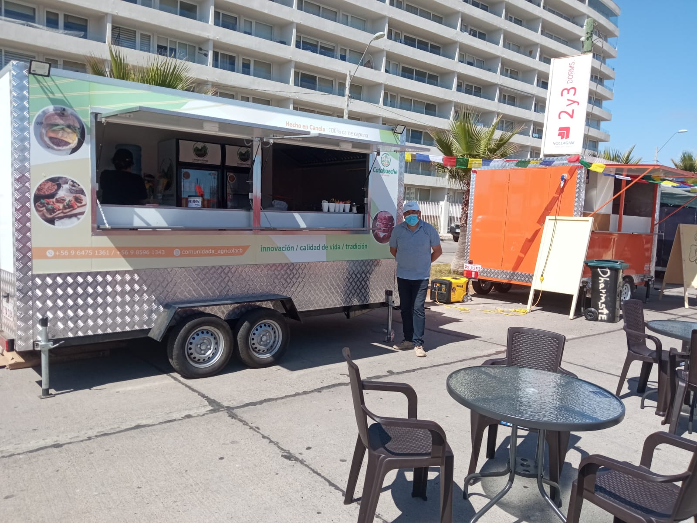
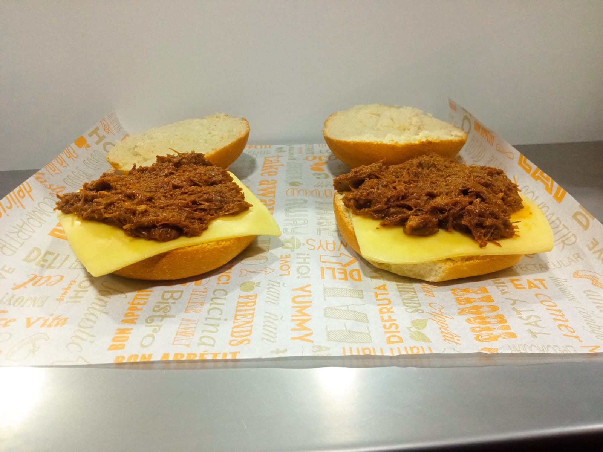

Foodtruck de productos caprinos estará disponible hasta fines de febrero en la Avenida del Mar en La Serena
El espacio fue gestionado a través del programa Transforma Caprino, junto al Departamento de Fomento Productivo de la Municipalidad de La Serena.

Empanadas, hamburguesas y sándwiches con carne y queso de cabra son alguno de los productos que podrán encontrar quienes asistan al Boulevard de Foodtrucks que por estos días y hasta el 28 de febrero alojará al carro de la fábrica Catahueche. Esta iniciativa representa toda una oportunidad para los veraneantes de probar estos productos cárnicos elaborados directamente aquí en la Región de Coquimbo y que poseen importantes cualidades nutricionales.
Entre las 12:00 y las 21:00 horas los visitantes podrán encontrar el foodtruck, ubicado en la Avenida del Mar con calle Las Higueras. Además, los combos se encuentran con interesantes descuentos por la temporada, al ser venta directa de la fábrica.
Daniel Contreras, director de la Comunidad Agrícola Catahueche, señaló que «la actividad ha estado bastante buena, pese a que varios eventos han mermado la actividad turística. Sin embargo, nuestro objetivo es que la gente pueda conocer y disfrutar estos productos en estos nuevos formatos y en ese sentido, nuestro balance es positivo. Queremos que la gente los conozca para que luego pueda adquirirlos en alguna tienda o restaurante».
En cuanto al recibimiento del público a los productos, el encargado afirmó que «estamos muy contentos, ya que a la gente le ha gustado el producto, compran y vuelven a venir y eso nos tiene felices, ya que podemos ver que los turistas quieren experimentar cosas nuevas y nos han brindado una retroalimentación muy positiva».
Esta iniciativa se gestó durante la Expo Caprina 2021, que se realizó en la Plaza de Armas de La Serena, donde participó el foodtruck de Catahueche. A partir de ahí se extendió, por parte de la municipalidad, una invitación a los productores de postular a este espacio, el cual finalmente se concretó a comienzos del mes de enero.
Ingrid Haselbauer, gerente del programa Transforma Caprino, indicó que «esto es importante para todos los productores caprinos de la Región de Coquimbo, aunque no lo parezca, ya que pone en vitrina a los productos provenientes de la industria caprina y que no están en ninguna otra parte en Chile. Hoy el turista que exige calidad e inocuidad, tienen acceso a él y eso nos tiene muy satisfechos».
Además de abrir espacios para compartir los productos con los visitantes, se han generado otras oportunidades de negocios como la vinculación con restaurantes. Tal es el caso del Restaurante Entre Tacos, ubicado en Vallenar, donde su dueño pudo degustar las hamburguesas caprinas y decidió comprar una orden de productos para llevar a su local.
Transforma Caprino es un programa de Corfo, financiado por el Gobierno Regional, a través del Programa Gestión Territorial de Zonas Rezagadas, que busca impulsar la cadena de valor del rubro caprino. Actualmente, está focalizado en las comunas de Punitaqui, Monte Patria, Combarbalá, Canela, entre otras. Para más información, es posible visitar sus redes sociales, en Facebook, Instagram y Twitter.
